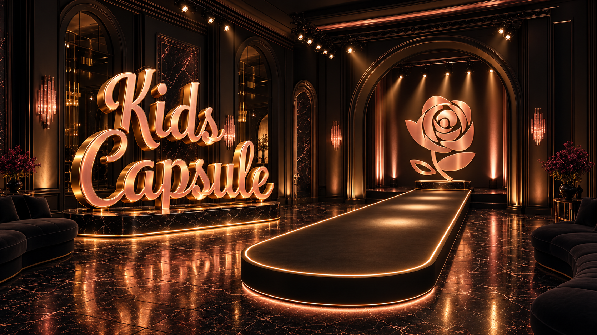
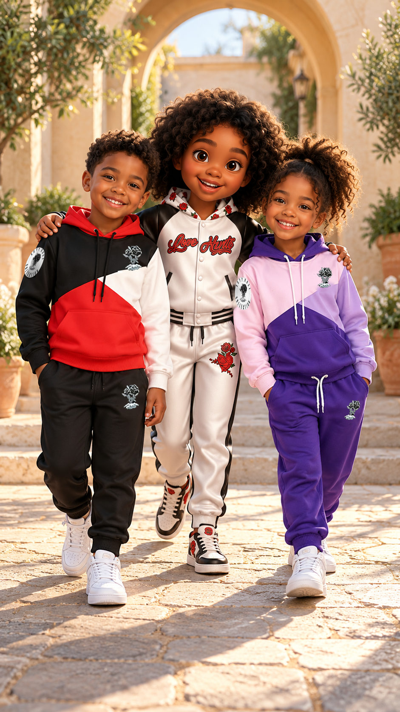

Kids Capsule
Retained runway artwork and corrected courtyard closing. Static review checkpoint; the revised animation is still in progress.


Retained runway artwork and corrected courtyard closing. Static review checkpoint; the revised animation is still in progress.

